Termos de uso
Regras claras para você usar o Projeto Delta com tranquilidade.
Resumo rápido: o Projeto Delta permite acompanhar o consumo de água da residência, consultar históricos, receber alertas e visualizar estimativas. Ao utilizar a plataforma, você concorda com as regras de uso descritas nesta página.
Última atualização: 21 de outubro de 2026.
Índice
1. Aceitação dos termos
Estes Termos de Uso regulam o acesso e a utilização do site e da plataforma Projeto Delta ("Delta", "nós"). Ao se cadastrar, entrar na sua conta ou utilizar qualquer funcionalidade, você declara que leu, entendeu e concorda com estes termos e com a nossa Política de Privacidade.
Se você não concordar com alguma parte, não deve utilizar a plataforma.
2. O que é o Projeto Delta
O Projeto Delta conecta dispositivos IoT instalados nos hidrômetros a uma plataforma web e mobile para acompanhar o consumo de água em tempo semi-real. As funcionalidades previstas incluem:
O Projeto Delta foi desenvolvido por estudantes do Instituto J&F como solução alinhada ao ODS 12 (consumo e produção responsáveis). As funcionalidades podem evoluir, ser alteradas ou descontinuadas ao longo do tempo.
3. Cadastro e conta
4. Regras de uso
Ao utilizar o Delta, você se compromete a não:
5. Dispositivos e instalação
A instalação do dispositivo no hidrômetro é realizada por uma equipe terceirizada especializada, conforme previsto no projeto. Não tente instalar, abrir ou modificar o equipamento por conta própria.
Após a instalação, o dispositivo recebe um identificador único (Device ID) e um QR Code é utilizado para vinculá-lo à conta do usuário. O equipamento precisa de conexão Wi-Fi para transmitir as leituras à plataforma.
6. Inteligência artificial e previsões
As previsões de consumo e do valor da conta, os alertas e as respostas do chatbot utilizam dados de consumo e técnicas de análise de dados e inteligência artificial. Os resultados são estimativas e podem conter imprecisões.
Os valores exibidos são estimativas baseadas no consumo registrado e nas tarifas cadastradas. Eles não substituem a fatura oficial da concessionária. Suspeitas de vazamento devem ser verificadas por profissional qualificado.
7. Propriedade intelectual
A marca Delta, o logotipo, o design, os textos, o código e demais elementos da plataforma pertencem aos seus desenvolvedores ou são usados com autorização, e são protegidos pela legislação de propriedade intelectual.
Você mantém a titularidade dos dados que gera ao usar o serviço (como seu histórico de consumo) e nos concede uma licença limitada, não exclusiva, apenas para operar e melhorar a plataforma, conforme a Política de Privacidade.
8. Privacidade e dados pessoais
O tratamento dos seus dados pessoais segue a Lei Geral de Proteção de Dados (Lei nº 13.709/2018) e está descrito na Política de Privacidade, que faz parte integrante destes termos.
9. Limitação de responsabilidade
Trabalhamos para manter a plataforma disponível e segura, mas não garantimos funcionamento ininterrupto ou livre de erros. O Delta não se responsabiliza por:
Nada nestes termos exclui direitos que a lei, em especial o Código de Defesa do Consumidor, assegure a você.
10. Suspensão e encerramento
Você pode encerrar sua conta a qualquer momento pelos canais de contato. Podemos suspender ou encerrar contas que violem estes termos, coloquem a segurança da plataforma em risco ou estejam inativas por longo período, sempre que possível avisando antes.
Após o encerramento, os dados serão tratados conforme os prazos descritos na Política de Privacidade.
11. Alterações nos termos
Podemos atualizar estes termos para refletir mudanças no serviço ou na legislação. Quando houver mudanças relevantes, avisaremos por e-mail ou na plataforma. A data da última atualização fica sempre no topo desta página. Continuar usando o Delta após a atualização significa que você concorda com a nova versão.
12. Lei aplicável e foro
Estes termos são regidos pelas leis da República Federativa do Brasil. Fica eleito o foro do domicílio do usuário consumidor para resolver eventuais conflitos, sem prejuízo de tentativa prévia de solução amigável pelos nossos canais de atendimento.
13. Contato
Dúvidas sobre estes termos? Fale com a gente pelo e-mail contato@projetodelta.com.
© 2026 Projeto Delta. Todos os direitos reservados.